Behind Cherielle is a group of girls who just really, really care. Come meet the team!
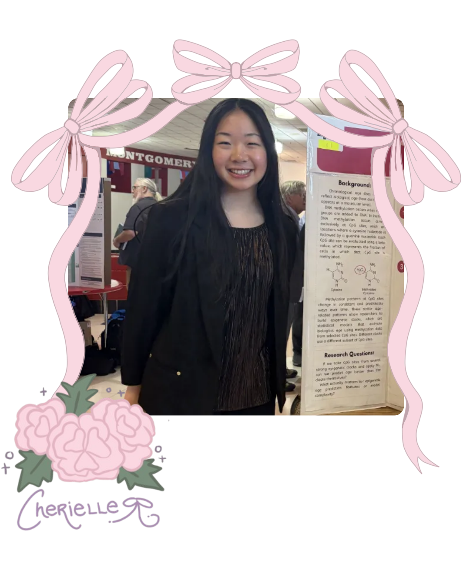
Co-Founder
I started cherielle as a way for women and non-binaries in STEM to find a safe place for resources and a community of helpful and amazing people of all backgrounds, something I wish I had.
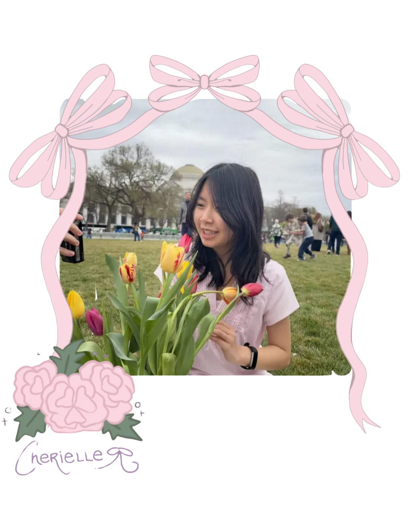
Co-Founder
Hi, my name is Qwyen (pronounced like "quinn") and I'm an incoming freshman at UC Berkeley for EECS! I co-founded cherielle because I wanted to inspire more girls to join computer science after learning about the gender gap. At cherielle, I love helping out with graphic design, using Notion, and creating reels for social media, but you can find me listening to kpop/pop/indie or junk journaling in my free time.
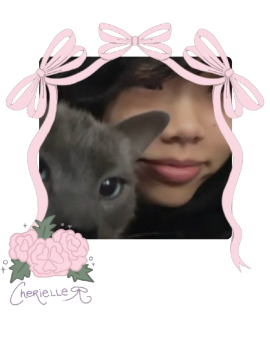
Executive Director + Fundraising and Event Coordinator
Hi, I'm Mabel! I've always been interested in what goes into keeping our digital lives secure, and with Cherielle, I hope we can turn that interest into a real possibility for girls everywhere. I'm a firm believer that a willingness to learn is what matters most in cybersecurity; you just need to be relentlessly curious. Let's work together to make a future in cybersecurity accessible to everyone!
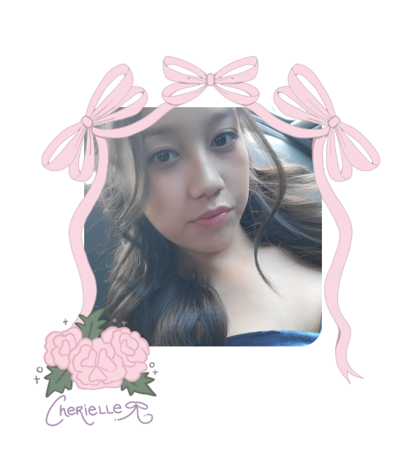
Secretary
Hiii, I'm Alexa! I am interested in studying computer engineering and passionate about building supportive communities where girls can thrive in tech. As one of the only girls in my computer science class, I joined Cherielle to dive deeper into the industry whilst connecting with people who share similar challenges and ambitions. Outside of endless code, I love getting lost in a good book, playing football and swimming. I'm excited to meet and work with everyone to make STEM more inclusive for all! :)
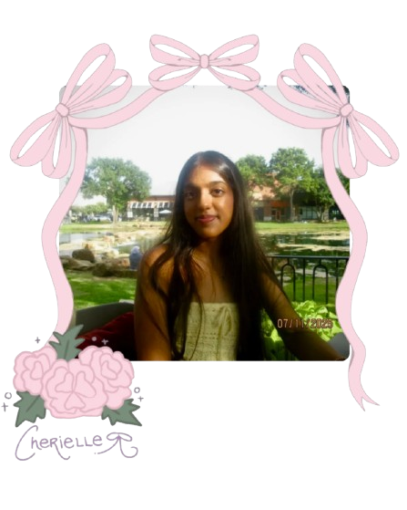
Head Tutor
Hi, my name is Saanvi! I'm a sophomore in Texas and the head tutor for Cherielle. I love learning different coding concepts and languages and am passionate about empowering women in the CS field. In my free time, I enjoy playing tennis, baking, and listening to music.
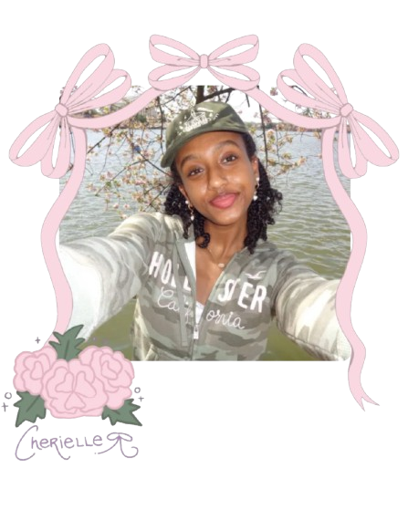
Head Tutor
My name is Elroi and I am a junior in high school based in Maryland. As part of Cherielle, I assist with assigning tasks to tutors and creating lesson plans. Outside of coding, I enjoy making music, writing, and dancing!
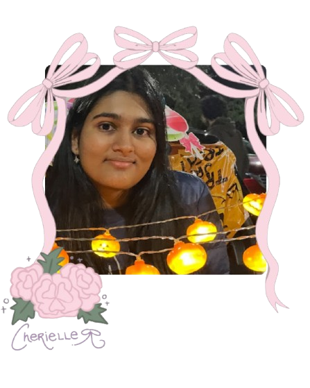
Webmaster
Hi, my name is Sahasra! I'm a junior in Texas with a strong passion for computational biology, computer science, and machine learning. I love learning new coding concepts and aspire to see more girls represented in engineering fields. In my free time, I love sketching, gaming, and listening to music!
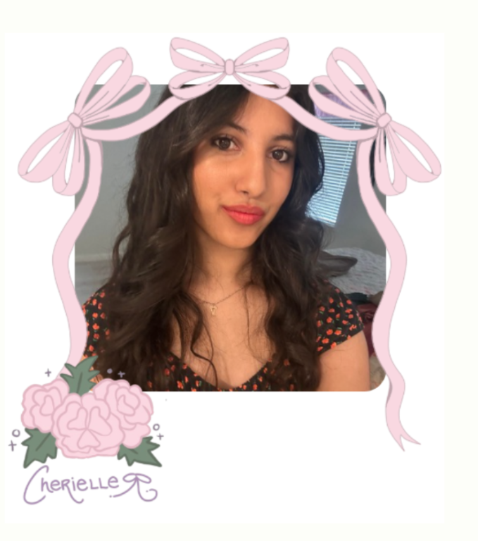
Webmaster
Hi! My name is Omya, and I'm currently a junior in Texas. I find computer science fascinating, and I've recently been focusing in on cybersecurity. I'm so excited to be working in Cherielle to represent my STEM girlies! Some of my hobbies are crocheting, and watching shows!
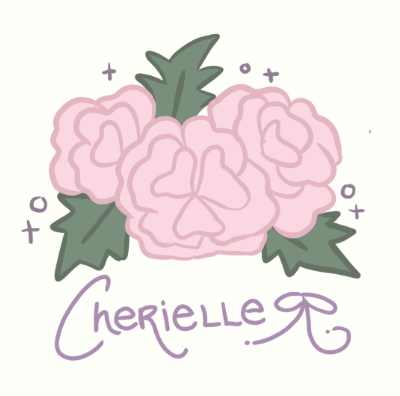
Webmaster
Hello, My name is Maggie. I'm currently a senior in Maryland. I am interested in biology, computational biology and bioinformatics, computer science, and cybersecurity.
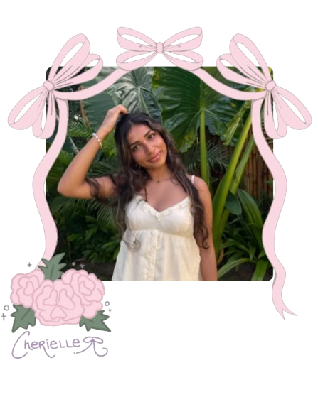
Content Director
Hi, my name is Siya and I'm from Maryland! I am extremely passionate about computer science and especially about machine learning. I love to tutor, bake, and dance in my free time. I am very excited to be a part of Cherielle this year!
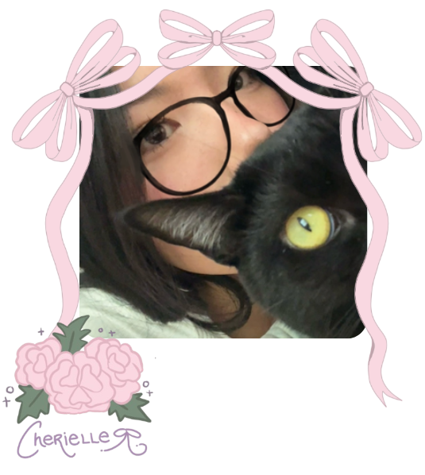
Content Director
Hello, my name is Christine! I have always loved the intersection of art and engineering; whether its creating a prototype from scratch, or reverse engineering how it works. Creativity as means to communicate ideas is my forte, especially in nonconventional ways. Here at cherielle, I strive for diversity in male-dominated fields; and show that individuality has a place in STEM too.
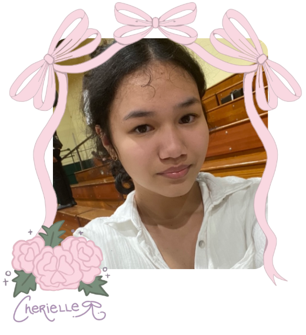
Design Lead
Hi, my name is Jessica, but call me Jesse! When my nose isn't in a book or I'm not busy designing my next project, I'm exploring a plethora of STEM fields. Here at Cherielle, I hope to expand its whimsical and cute aesthetic through my design skills, helping make STEM more welcoming and inclusive for everyone.
Social Media Manager
I'm a high school junior from the United States passionate about computer science, particularly AI/ML! Some of my hobbies include coding, listening to music, and spending time with friends!
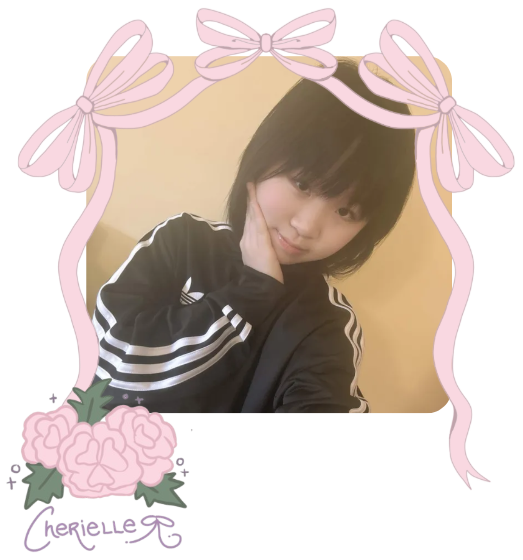
Social Media Manager
Hi! I'm Annabelle, and I'm one of Cherielle's social media managers! I love graphic design, data analysis, and intend on majoring in marketing or business. I love collecting trinkets (especially Smiskis) and reading web novels.
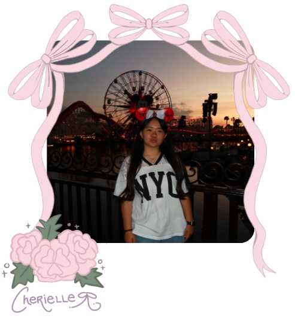
Fundraising and Event Coordinator
My name is Shanie and I'm one of the fundraising and events coordinators at cherielle! I have a strong passion for computer science and engineering and aspire to see girls represented in a stronger manner, which is why I joined cherielle! In my free time, I love to watch movies, tv-shows, and musicals :)
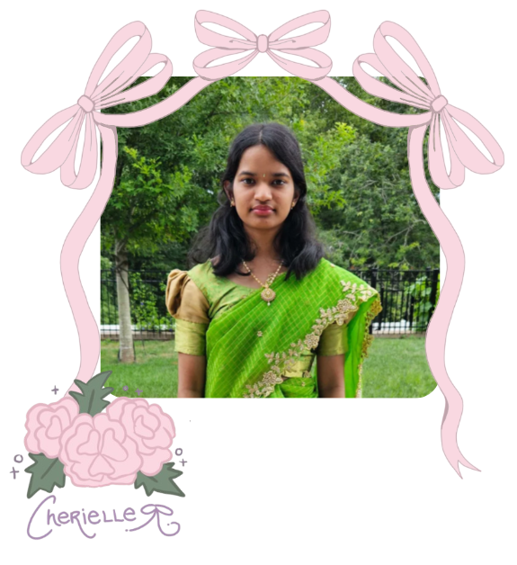
Communications Director
Hi! I'm Ruushita and I am a communications director at Cherielle. I love being able to be a part of Cherielle and help make computer science more welcoming and inclusive. I also enjoy crocheting and reading in my spare time.
Communications Director